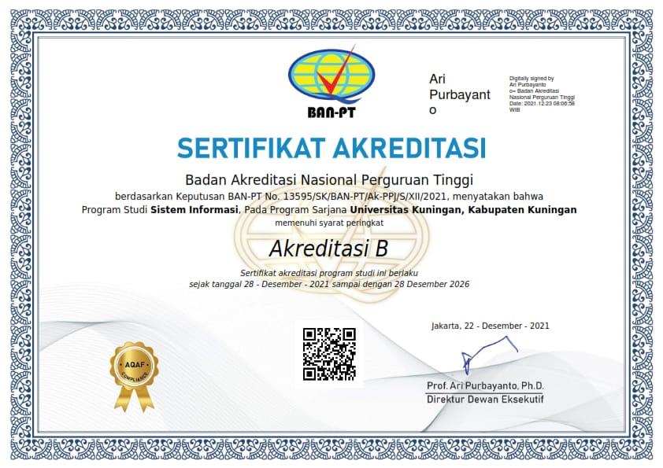

Sistem informasi

VISI
Terwujudnya program studi sistem informasi sebagai program studi yang handal dan unggul dalam penyelenggaraan Tri Darma Perguruan Tinggi, unggul di bidangrekayasa sistem informasi di Wilayah Jawa Barat pada tahun 2032.
PROFIL LULUSAN & PILIHAN KARIR
System Analyst, Data Analyst, Chief Information Officer (CIO), SoftwareQuality Assurance.
KEGIATAN MBKM
- Magang
- Studi Independen
- Bangkit Academy
- Pertukaran Mahasiswa Merdeka (PMM) Nusantara
- International Credit Transfer (ICT)
PROGRAM UNGGULAN
- Pertukaran Mahasiswa ke University Utara Malaysia (UUM)
- Praktisi/Dosen Kompetensi dari Universitas lain
PRESTASI MAHASISWA
- Juara 1 lomba Desain Cindramata 2018
- Juara Favorit lomba poster STIKKU 2017
- Mahasiswa Berprestasi UNIKU 2022
- Duta Putra Sosial Kuningan 2022
- Juara Lomba LLDIKTI Konsep Garapan Terbaik Tingkat Jabar-Banten2022
- PPK Ormawa
SERTIFIKAT
